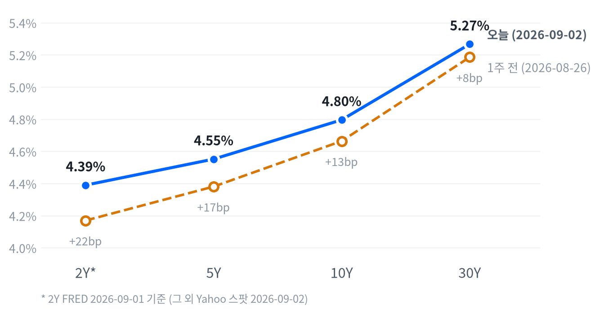

뉴욕증시 3대 지수가 일제히 올랐습니다. 국채 10년물이 장중 2023년 11월 이후 최고치를 찍은 뒤 되밀리며 증시에 숨통을 틔웠습니다.
이날 발표된 8월 ADP 민간고용이 예상을 밑돌며 노동시장 냉각 신호를 보탰습니다. 다만 잭슨홀 이후 높아진 9월 인상 경계감은 그대로라, 채권 비중은 여전히 신중하게 가져가야 합니다.
오늘 하루를 지배한 것은 지수보다 금리였습니다. 10년물은 장중 4.818%까지 올라 2023년 11월 이후 최고치를 찍었습니다. 이후 4.796%로 마감해 상승분을 되돌렸고, 그 되돌림에 사흘 연속 하락하던 뉴욕증시가 반등했습니다.
금리가 잠시 주춤한 것이지 꺾인 것은 아닙니다. 잭슨홀에서 매파 발언을 내놓은 워시 의장 취임 이후 9월 인상 확률은 CME 기준 66%까지 올라 있어, 물가와 고용 지표가 이 우위를 뒤집기 전까지는 장기물에 부담이 이어질 공산이 큽니다.
행동은 유지입니다 — 2~6주 구간에서 채권 숏 바이어스와 주식 중립 포지션을 그대로 가져갑니다. 에너지·귀금속의 소폭확대도 트리거가 다시 열릴 때까지는 지금 수준을 지킵니다.
이 판단은 9월 중순 전 발표될 8월 CPI나 고용보고서가 예상을 크게 밑돌면 무효화됩니다. 그때는 인상 우위 논리가 꺾이며 채권 비중을 다시 늘릴 근거가 생깁니다.
| 지수 | 종가 | 등락률 | 기준일 |
|---|---|---|---|
| 닛케이225 | 66,215.34 | -0.15% | 9/1 |
| 항셍 | 25,329.73 | -0.93% | 9/1 |
| 상해종합 | 3,979.89 | -0.16% | 9/1 |
| DAX | 25,970.11 | -1.10% | 9/1 |
| FTSE100 | 10,789.30 | -0.32% | 9/1 |
| 유로스톡스50 | 6,368.98 | -0.80% | 9/1 |
| VIX | 15.20 | -6.98% | 9/2 |
글로벌 마감. 아시아 증시는 닛케이 -0.15%, 항셍 -0.93%, 상해종합 -0.16%로 대체로 하락하며 미국과 엇갈렸습니다. 유럽도 DAX -1.10%와 유로스톡스50 -0.80% 하락 등으로 미국 상승과 엇갈렸습니다.
야간 선물. 간밤 선물은 좁은 박스권에서 움직였습니다. E-mini S&P는 오전 7시대 저점 7,619에서 오전 8시대 고점 7,659까지 0.53% 올랐습니다. 나스닥 선물도 저녁 8시대 고점 29,170과 오전 7시대 저점 28,927 사이에서 0.84% 범위를 그렸네요. 현물 개장은 3대 지수 모두 좁은 갭으로 출발했는데, S&P +0.04%, 나스닥 -0.05%, 러셀2000 +0.22%였습니다.
마감 위치. 세 지수의 마감 위치는 모두 '중단 마감' 구간에 머물렀습니다. 나스닥이 종가 위치 83, 러셀2000이 82, S&P500이 71로 장 후반 상승분을 대부분 지키며 마쳤습니다. 이 경계값(고점권 84.6·저점권 25.0)은 최근 2,256거래일 이력에서 매일 다시 잰 값입니다.
무엇이 움직였나. 장을 움직인 것은 채권시장이었습니다. 10년물이 장중 고점 4.818%에서 밀려나며 위험자산에 숨통을 틔웠고, 개장 전 발표된 8월 ADP 민간고용(+3.8만, 예상 +4.7만 하회)이 노동시장 냉각 신호를 보탰습니다. 다우는 엔비디아와 존슨앤드존슨 강세에 힘입어 3대 지수 중 가장 크게 올랐죠(여섯 지수를 다 놓고 보면 러셀2000이 +1.13%로 가장 컸습니다). 시간외 움직임은 특별히 두드러지지 않았습니다.
채권 변동 폭이 가라앉자 VIX도 -6.98% 내려 15.20을 기록했습니다. 위험 회피 심리가 하루 만에 크게 누그러졌다는 신호입니다.
금과 엔화 같은 안전자산도 함께 움직였습니다. 국채 금리가 급등하며 커진 재정 우려와 워시 의장의 매파 발언 이후 나타난 달러 되돌림 흐름이 겹치며, 금은 장중 한때 시가 대비 +2.17%까지 뛰었다가 상승분 일부를 반납했습니다. 원유는 반대로 지정학 재료에 더 민감하게 반응한 하루였고, 두 자산은 오늘 서로 다른 이유로 함께 강했던 셈입니다.
S&P500은 7,667로 마감해 최근 2년(504거래일) 가운데 이보다 높았던 날이 18일뿐인 자리에 있습니다. 이 지수는 지난 한 주 동안 -0.12% 밀렸고 한 달로는 -0.74% 낮아져, 사상 고점권에서도 최근 흐름은 완만하게 식는 중이죠. 오늘 상승폭은 평소 하루 움직임의 0.58배로 보통 수준이었고, 러셀2000은 1.19배로 조금 더 컸습니다. VIX는 15.20으로 낮은 쪽에 자리 잡아 시장이 여전히 느긋하다는 신호를 보냅니다.
| 지수 | 종가 | 등락률 |
|---|---|---|
| Russell 2000 | 2,953.17 | +1.13% |
| Dow | 53,061.95 | +0.56% |
| S&P 500 | 7,666.60 | +0.46% |
| Nasdaq | 26,217.83 | +0.45% |
| S&P 500 Growth | 138.92 | +0.51% |
| S&P 500 Value | 236.77 | +0.41% |
| 섹터 | 등락률 |
|---|---|
| Materials | +1.69% |
| Comm. Services | +1.39% |
| Financials | +0.80% |
| Health Care | +0.75% |
| Energy | +0.51% |
| Consumer Staples | +0.33% |
| Utilities | +0.26% |
| Consumer Disc. | +0.24% |
| Industrials | +0.03% |
| Technology | -0.02% |
| Real Estate | -0.70% |
장중 흐름. 나스닥과 S&P500은 개장 직후(09:30 ET) 각각 시가 대비 -0.08%, -0.01%로 살짝 밀렸습니다. 이후 두 지수는 오전 11시대에 고점(개장 대비 +0.61%)을 찍고 상승분 일부를 반납한 채 마감했습니다. 러셀2000은 개장가가 곧 저점이었고 오후 3시까지 꾸준히 올라 고점(+1.13%) 부근에서 그대로 마쳐, 소형주가 장 후반까지 가장 강한 흐름을 보였습니다.
엔비디아는 개장 직후 -0.14% 눌렸다가 오전 11시대 고점에서 시가 대비 +4.19%까지 치솟았습니다. 이후 상승분 일부를 반납하고 최종 +3.21%로 마감해, 이날 장중 변동성이 가장 큰 종목이었습니다.
섹터 폭은 완만했습니다. 소재가 +1.69%로 가장 강했고 커뮤니케이션 서비스(+1.39%)와 금융(+0.80%)이 뒤를 이었습니다. 부동산(-0.70%)과 기술(-0.02%)만 내렸습니다.
지수의 오늘 상승(+0.46%)에서 커뮤니케이션 서비스 혼자 +0.20%포인트를 끌어올려 가장 크게 기여했고, 금융과 헬스케어가 각각 +0.09%포인트, +0.07%포인트로 뒤를 받쳤습니다. 나머지 섹터로 설명되지 않는 부분은 +0.05%포인트에 그쳐, 오늘 상승은 몇몇 업종에 걸쳐 비교적 넓게 나타났습니다.
오늘 시장의 가장 큰 공통 움직임은 주식군에 실렸고, 그다음은 금리군(19.1%)이었습니다. 이는 전일과 같은 순서로, 자산군 사이의 주도권이 바뀐 날은 아니었습니다. 성장주(+0.51%)와 가치주(+0.41%)도 비슷한 폭으로 함께 올라, 오늘 반등은 스타일 한쪽에 치우치지 않았습니다.
전략 해석. 오늘 상승은 평균적인 종목이 지수를 따라간, 비교적 폭넓은 반등이었습니다. 참여도가 특별히 강하지도 약하지도 않았던 만큼 이번 반등을 추세 전환으로 서둘러 해석할 근거는 아직 약합니다. 시장 전체의 움직임 응집도(상위 1개 공통 요인이 42.7%)는 평소 수준이라 오늘 반등이 유독 쏠린 베팅으로 보이지는 않지만, 채권시장이 다시 흔들리면 이 폭은 빠르게 좁아질 수 있습니다.
10년물은 4.796%로 마감해 최근 2년(504거래일) 가운데 이보다 높았던 날이 하루뿐인 자리입니다. 30년물도 5.267%로 이보다 높았던 날이 닷새뿐이어서, 장기금리 전 구간이 20여 년 만의 최고 수준 근처에 머물러 있네요. 지난주 대비로는 10년물이 +13.2bp, 30년물이 +8.1bp 올라 상승세가 이어졌습니다. 다만 오늘 하루 변화는 두 만기 모두 사실상 없어(10년물 보합, 30년물 -0.1bp) 움직임 자체는 미미했습니다.
| 만기 | 종가 | 전일比(bp) | 1주 전 | 주간 변화(bp) |
|---|---|---|---|---|
| 2Y* | 4.39% | +5.0 | 4.17% | +22.0 |
| 5Y | 4.552% | -0.5 | 4.381% | +17.1 |
| 10Y | 4.796% | +0.0 | 4.664% | +13.2 |
| 30Y | 5.267% | -0.1 | 5.186% | +8.1 |

2s10s 스프레드는 +40.6bp(2Y 9월1일·10년물 9월2일 혼합 기준)입니다. 만기 두 다리를 모두 같은 날짜(9월1일 FRED 기준)로 맞추면 +40.0bp로, 차이는 0.6bp에 그칩니다. 당일 기준으로 커브 형태를 보려면 5년·30년물이 모두 같은 날짜인 5s30s(+71.5bp)가 더 적합합니다.
지난주 대비로는 실질금리와 기대인플레이션이 함께 오르며 전 구간 금리가 밀렸고, 5s30s가 80.5bp에서 71.5bp로 9.0bp 좁아져 베어 플래트닝에 가까운 모습이었습니다. 다만 2Y의 주간 변화(+22bp, 8/25 기준일)는 다른 만기와 기준일이 하루 이상 달라 이 형태 판정에 단정적으로 넣지는 않았습니다.
금리는 왜 움직였나. 명목금리 상승의 속을 뜯어보면 이번 주는 실질금리가, 오늘 하루는 기대인플레이션이 주도했습니다. 10년물의 1주일 변화(+15.0bp) 중 실질금리가 +12.0bp로 대부분을 설명했고, 기대인플레는 +3.0bp에 그쳤습니다. 반면 오늘 하루 변화(+4.0bp)는 전부 기대인플레이션 쪽에서 나왔고 실질금리는 움직이지 않았습니다(9월1일 FRED 동일자 기준).
실질금리가 이번 주 내내 오른 것은 국채 발행 부담과 잭슨홀 이후 재산정된 인상 경로가 겹친 결과로 보이고, 오늘 기대인플레가 다시 고개를 든 것은 유가 반등과 관련이 있어 보입니다. 10년 기간프리미엄(만기가 길수록 더 얹어 받는 값)은 8월28일 기준 0.88%로 최근 며칠 새 오르고 있어, 실질금리 상승은 성장 기대보다 수급·기간프리미엄 쪽에서 온 신호라고 볼 수 있습니다.
신용시장은 아직 잠잠합니다. 하이일드 스프레드는 2.65%(9월1일)로 5일간 오히려 5bp 좁아졌고, 투자등급 스프레드도 0.81%로 큰 변화가 없어 금리 급등에도 뚜렷한 스트레스 신호는 없습니다.
5년 후 5년 금리(장기 성장·물가 기대를 보여주는 지표)는 9월1일 기준 명목 5.03%, 실질 2.70%입니다. 하루 전보다 +2.0bp 올라 시장의 장기 전망이 살짝 높아졌다는 신호로 볼 수 있습니다.
단기 자금시장도 잠잠한 모습입니다. 3개월 T-bill은 3.78%(9월1일), SOFR는 3.66%로 최근 5일간 거의 변화가 없어, 단기 금리 쪽에서 오는 압력은 딱히 없다고 볼 수 있습니다.
듀레이션 전략. 30년물이 여전히 고점권을 벗어나지 못한 만큼 장기물 신규 확대는 보류하고, 5년물 중심의 벨리 구간 보유를 그대로 유지하는 편이 낫습니다.
달러지수는 99.577로 딱히 강달러도 약달러도 아닌, 중간 수준 자리에 있습니다. 1주일로는 +0.41% 올랐지만 한 달로는 -0.11%로 거의 그대로이고, 오늘 하루 변화(-0.09%)는 평소 움직임의 0.32배에 그쳐 미미했습니다.
엔화는 달러 대비 158.80엔으로 최근 2년 가운데 높은 쪽 20% 안에 있어, 엔 약세가 아직 짙게 남아 있는 자리입니다. 원화는 1,359원으로 최근 504거래일 가운데 이보다 낮았던 날이 29일뿐인 강세 구간입니다.
| 통화 | 종가 | 등락률 |
|---|---|---|
| DXY | 99.577 | -0.09% |
| USD/KRW | 1,359.15 | -1.00% |
| USD/JPY | 158.801 | -0.87% |
| EUR/USD | 1.1590 | -0.05% |
달러는 왜 이 방향인가. 달러지수 자체는 -0.09%로 사실상 보합이었습니다. 방향을 가른 것은 달러 자체가 아니라 개별 통화 재료입니다 — 엔화와 원화가 각자의 재료로 달러 대비 절상되면서, 지수 전체는 크게 안 움직인 채 페어별로만 갈렸습니다.
오늘 크게 움직인 것은 개별 통화였습니다. 엔화는 국채금리가 장중 고점을 찍고 되밀리는 구간에서 안전자산 수요가 붙어 -0.87% 절상됐고, 이는 평소 하루 움직임의 2.04배에 달하는 큰 폭이었습니다. 원화도 -1.00% 절상되며 평소보다 1.79배 큰 하루를 만들었는데, 달러 자체의 약세보다는 반도체주 변동성과 자본 흐름 쪽 요인이 커 보입니다.
유로도 달러 대비 -0.05%로 소폭 내렸지만, 움직임 자체는 사실상 없는 수준으로 미미했습니다. 주식과 달러의 최근 상관은 -0.26으로 여전히 반대 방향이지만, 그 강도는 직전 구간(-0.68)보다 느슨해졌습니다.
엔 캐리 트레이드 청산에 대한 우려도 배경 중 하나로 꼽힙니다. 국채 금리가 급등락하는 구간에서는 저금리 통화를 빌려 고금리 자산에 투자하는 거래가 흔들리기 쉬워, 엔화가 안전자산 성격과 캐리 청산 성격을 동시에 띠는 날이 잦습니다.
장중 흐름. 엔화는 새벽 2시대 고점(달러 강세, 160.39엔) 이후 줄곧 강해져 오후 2시대 저점(158.19엔)까지 시가 대비 -1.25% 밀렸다가 소폭 되돌리며 마감했습니다.
WTI는 배럴당 90.72달러, 금은 온스당 4,429달러로 두 원자재 모두 최근 흐름에서 상단 구간에 자리 잡고 있습니다(각각 높은 쪽 12%, 23% 안). 지난 한 주로는 WTI가 +10.32%, 금은 -3.70%로 서로 다른 길을 걸어왔습니다. 오늘 하루 변화는 WTI가 평소의 0.17배로 사실상 멈춰 섰고, 금은 1.15배로 보통 수준을 보였습니다.
| 원자재 | 종가 | 등락률 |
|---|---|---|
| Natural Gas | $3.007 | +3.55% |
| Gold | $4,429.30 | +1.87% |
| Brent | $95.30 | +0.69% |
| WTI | $90.72 | +0.55% |
무엇이 움직였나. 오늘 유가 강세는 수요보다 공급 우려 쪽에 가깝습니다 — 브렌트가 배럴당 95.30달러로 WTI와의 스프레드가 4.58달러까지 벌어져, 국제 유가 쪽이 더 크게 반응했다는 뜻입니다. 금은 실질금리가 거의 움직이지 않은 하루(10년 실질금리 2.44%, 보합)에도 +1.87% 뛰었는데, 이는 금리보다 안전자산 수요와 달러 되돌림이 더 크게 작용했다는 신호입니다.
천연가스는 +3.55%로 오늘 원자재 중에서 가장 크게 뛰었지만, 지정학 재료보다는 계절적 수요 변동성이 큰 시장이라 유가·금 흐름과는 별개로 볼 필요가 있습니다.
금과 금리의 최근 상관은 -0.07로 거의 무관한 수준입니다. 전에는 -0.48로 더 뚜렷한 반대 흐름이었던 것과 비교하면, 최근 금 값은 금리보다 안전자산 수요나 달러 쪽 재료에 더 크게 좌우되고 있다는 뜻입니다.
천연가스의 최근 강세는 저장량 보고서와 늦여름 냉방 수요 변화에 더 민감하게 반응하는 경향이 있어, 오늘의 강세도 유가·금과는 결이 다른 계절적 요인의 연장으로 보는 편이 합리적입니다.
장중 흐름. WTI는 오전 10시대 저점(88.97달러)까지 밀렸다가 오후 2시대 고점(91.48달러)까지 반등했습니다. 시가 대비로는 -1.91%에서 +0.86%까지 오간 뒤 보합권인 90.72달러로 마감했습니다.
금은 자정 무렵 저점(4,348달러) 이후 오전 10시대 고점(4,444달러)까지 급등했습니다. 시가 대비 +2.17%까지 올랐다가 상승분 일부를 반납하고 4,429달러로 마쳤습니다.
연착륙 국면을 이틀째 유지합니다. 성장 쪽은 -0.363으로 둔화에 머물러 있고, 물가 쪽은 어제 이미 둔화로 넘어왔습니다. 오늘 새로 나온 내구재 주문(활동축 지표)은 이 좌표를 바꿀 만큼 방향성이 뚜렷하지 않아 국면은 그대로입니다. 성장축 -0.363 · 인플레축 -0.391
고용은 보합입니다. 일곱 지표 중 넷이 개선됐지만 비농업 고용과 임금이 반대로 갔습니다. 고용축 +0.117
| 지표 | Actual | Forecast | Previous | 발표일 |
|---|---|---|---|---|
| JOLTS 구인건수(7월) | 727.1만 | 730~731만 | 718.2만 | 9/1 |
| 신규 실업수당 청구 | 20.3만 | 20.8만 | 20.7만 | 8/27경 |
| 신규 청구 4주 평균 | 20.55만 | — | 20.425만 | 8/27경 |
| 계속 실업수당 청구 | 177.8만 | — | 179.6만 | 8/27경 |
| 비농업 고용(전월비) | -2.3만 | — | +2.0만 | 8/1 |
| 실업률 | 4.1% | — | 4.2% | 8/1 |
| 시간당 임금(전월비) | 0.05% | — | 0.29% | 8/1 |
생산·활동은 악화 쪽입니다. 다섯 지표 중 넷이 나빠졌고, 오늘 새로 나온 내구재 주문도 이 방향을 바꾸지 못했습니다. 활동축 -0.361
| 지표 | Actual | Forecast | Previous | 발표일 |
|---|---|---|---|---|
| 산업생산(전월비) | 0.2% | — | 0.27% | 8/15경 |
| 내구재 주문(전월비, 7월) | +1.08% | +0.5% | +0.58% | 8/26 |
| 신규주택 판매 | 60.7만 | — | 67.8만 | 8/26경 |
| 기존주택 판매 | 406.0만 | — | 413.0만 | 8/21경 |
| 실질 GDP 성장률(연율) | 1.5% | — | 2.1% | 2026 Q2 확정 |
내구재 주문 해부. 7월 내구재 주문은 전월비 +1.08%로 나와 컨센서스(+0.5%)를 웃돌았습니다(Census 발표).
속을 보면 다릅니다. 증가분의 상당 부분은 운송장비 한 항목(+2.3%)이 만들었고, 운송장비를 뺀 신규 수주는 +0.4%에 그쳤습니다. 기업 설비투자의 대리 지표로 쓰이는 항공기 제외 비국방 자본재도 +0.2%로 사실상 정체였고, 반등은 비국방 항공기(+12.7%) 한 품목에 쏠려 있었습니다.
그래서 이 지표는 활동축 판정을 흔들 근거가 되지 못합니다. 헤드라인은 서프라이즈였지만 핵심 설비투자 흐름은 여전히 완만한 정체입니다.
소비는 뚜렷하게 악화됐습니다. 둘 다 나빠졌고 특히 소매판매가 크게 꺾였습니다. 소비축 -0.847
| 지표 | Actual | Forecast | Previous | 발표일 |
|---|---|---|---|---|
| 소매판매(전월비) | -0.58% | — | 0.25% | 8/22경 |
| 미시간대 소비자심리 | 55.2 | — | 49.5 | 8/1경 |
물가는 둔화 쪽입니다. 여덟 지표 중 다섯이 둔화됐지만 CPI·PCE 연율은 오히려 소폭 재가속했습니다. 물가축 -0.391
| 지표 | Actual | Forecast | Previous | 발표일 |
|---|---|---|---|---|
| CPI 전년비 | 3.54% | — | 3.73% | 8/14경 |
| CPI 전월비 | 0.07% | — | -0.42% | 8/14경 |
| 근원 CPI 전년비 | 2.79% | — | 2.81% | 8/14경 |
| 근원 CPI 전월비 | 0.22% | — | -0.02% | 8/14경 |
| PPI 최종수요(전월비) | -0.03% | — | -0.11% | 8/15경 |
| PCE 물가 전년비 | 3.7% | — | 3.72% | 8/29경 |
| 근원 PCE 전년비 | 3.34% | — | 3.34% | 8/29경 |
| 미시간대 1년 기대인플레 | 4.2% | — | 4.6% | 8/1경 |
방향은 전일과 같습니다 — 오늘 신규 발표(내구재 주문)는 활동축 내부 지표라 경로 판단 자체를 다시 열 사안이 아니었습니다.
채권은 3~6개월 구조로는 우호적이지만, 2~6주 스탠스는 그대로 숏 바이어스입니다. 30년물이 여전히 수십 년 만의 고점권 부근을 벗어나지 못한 만큼, 구조적 방향이 가격에 실제로 반영되려면 시간이 더 필요하다고 보기 때문입니다.
정책 경로는 인상 우위를 유지합니다. 케빈 워시 의장의 8월 28일 잭슨홀 매파 발언 이후 9월 16일 FOMC 25bp 인상 확률은 CME FedWatch 기준 66%까지 올라 동결을 앞지르는 구도입니다.
이 판단을 뒤집을 조건은 분명합니다. 9월 FOMC 전 나올 8월 CPI나 고용보고서가 예상을 크게 밑돌거나 다른 연준 위원들의 발언이 완화적으로 되돌아오면 인상 우위 판단은 무효화됩니다.
내구재 주문 서프라이즈에도 채권시장은 별다르게 반응하지 않았습니다. 10년물은 발표 이후에도 크게 벗어나지 않았는데, 이미 실질금리·기간프리미엄 상승이 지배하던 흐름 안에서 이 지표 하나가 새로운 신호를 주지 못했다는 뜻입니다.
다음 2~3주 안에 국면을 움직일 수 있는 발표는 8월 CPI, 8월 고용보고서, 9월 16일 FOMC입니다. 컨센서스는 아직 확정되지 않았지만 시장은 이 셋을 인상 우위 판단의 다음 시험대로 보고 있습니다.
8월 28일 잭슨홀 경제정책 심포지엄에서 케빈 워시 연준 의장이 취임 100일을 맞아 첫 잭슨홀 연설을 했습니다. 이 발언은 오늘 처음 리서치 대상에 올랐지만, 발언 이후 한 주 동안 시장이 이미 크게 움직인 뒤라 그 여진을 함께 짚습니다.
But on the price-stability side of our mandate, the numbers are more concerning. The Fed's preferred measure of inflation, the 12-month change in the PCE price index, stands at 3.7 percent, while the six-month change is 4.1 percent.
물가 쪽은 더 우려스럽다고 말했습니다. 연준이 선호하는 물가 지표인 PCE 가격지수는 전년 대비(12개월) 3.7%, 6개월 기준으로는 4.1%라고 밝혔습니다.
출처: 8월 28일 잭슨홀 연설 원문 · 연방준비제도
And while this summer's PCE and CPI readings were better than expected, they do not tell me that underlying trends have meaningfully improved.
올여름 PCE와 CPI 지표가 예상보다 나았지만, 그것이 기조적 흐름이 의미 있게 개선됐다는 뜻은 아니라고 했습니다.
출처: 8월 28일 잭슨홀 연설 원문 · 연방준비제도
We must be confident that underlying inflation is moving to our objective, clearly and at sufficient speed. Otherwise, we have work to do.
기조적 물가가 목표를 향해 분명하고도 충분한 속도로 움직인다는 확신이 서야 하며, 그렇지 않다면 아직 할 일이 남았다고 말했습니다.
출처: 8월 28일 잭슨홀 연설 원문 · 연방준비제도
Business capital expenditures—the seed corn of future economic growth—are rising rapidly. The four-quarter change in investment in equipment and intangibles has been around 9 percent, its highest growth rate since 2021.
미래 성장의 씨앗인 기업 설비투자가 빠르게 늘고 있으며, 장비·무형자산 투자의 4분기 기준 증가율이 2021년 이후 가장 높은 약 9%에 이른다고 말했습니다.
출처: 8월 28일 잭슨홀 연설 원문 · 연방준비제도
시장 반응. 발언 당일 CNBC는 이를 "예상보다 매파적"이었다고 전했고, 금값이 내리고 다음 거래일 아시아 증시가 하락했다고 보도했습니다. 분·시간 단위 장중 데이터는 확보하지 못했지만, 그 뒤 한 주 동안 10년물은 4.664%에서 4.796%로, 2Y는 4.17%에서 4.39%로 각각 올랐습니다.
아이디어 1 — 장기물 숏 유지. 워시 의장이 PCE 상승률을 "더 우려스럽다"고 못박고 기조적 물가가 충분한 속도로 목표에 가야 한다고 조건을 건 것은, 인상 쪽으로 기운 지금의 금리 경로가 쉽게 되돌아가지 않는다는 뜻입니다. 이 발언이 만든 금리 재산정 경로는 기간프리미엄(만기가 길수록 더 얹어 받는 값)을 밀어 올리는 쪽으로 계속 작동할 가능성이 큽니다. 표현 수단은 장기 국채 비중을 낮게 가져가거나 커브 스티프너(단기 대비 장기 금리가 더 오르는 쪽에 베팅)로 잡는 것입니다.
8월 CPI나 고용보고서가 컨센서스를 크게 밑돌거나 30년물이 5.05% 밑으로 내려오면 이 아이디어는 접습니다.
아이디어 2 — AI 인프라 선별 매수. 의장이 직접 기업 설비투자가 빠르게 늘고 있고 그 성장률이 2021년 이후 가장 높다고 짚은 것은, 금리 인상 경계가 커진 지금도 AI 관련 자본지출 자체는 훼손되지 않았다는 근거입니다. 전달 경로는 금리보다 실적입니다 — 할인율이 오르더라도 매출 성장이 그것을 상쇄하는 종목이라면 밸류에이션 압박을 견딜 여력이 있습니다. 표현 수단은 AI 인프라 바스켓을 통째로 담기보다 전력·인프라 수주잔고가 뒷받침되는 개별 종목을 골라 담는 방식입니다.
하이퍼스케일러들의 3분기 캐펙스 가이던스가 하향되거나 30년물이 5.4%를 다시 넘어서면 이 생각을 접습니다.
어제 걸어둔 트리거는 오늘 전부 충족되지 않았습니다. 주식 확대 조건으로 걸어둔 지수의 50일선 3.0% 상회는 오늘 1.19%에 그쳤습니다. 방어적 축소 조건인 VIX 22.0 상회도 15.20으로 거리가 멉니다. 채권은 30년물 5.40% 상회도, 5.05% 하회도 모두 비켜갔습니다(현재 5.267%).
에너지·귀금속도 마찬가지입니다. WTI 5일 수익률(+10.32%)은 확대 트리거(+20%)와 축소 트리거(+3.0%) 사이에 있어 소폭확대를 유지합니다. 금도 20일 수익률(+4.29%)이 확대 트리거(+15%)에 못 미치고 5일 수익률(-3.70%)도 축소 트리거(-8.0%)를 건드리지 못해 역시 소폭확대를 유지하네요.
메모리는 20일 초과수익이 -2.59%포인트로 확대 트리거(+5.0%p)와 축소 트리거(-12.0%p) 사이에 있어 중립을 유지합니다. AI 인프라도 5일 초과수익이 -7.43%포인트로 확대 트리거(+5.0%p)에는 못 미쳐 중립입니다. 채권도 30년물이 5.40%(확대)와 5.05%(축소) 사이 5.267%에 있어 당분간 등급이 바뀔 가능성은 낮습니다.
오늘은 등급을 움직인 트리거가 없었습니다. 다만 어제(9월1일)는 주식이 20일선 훼손 조건(-1.0%)에, 에너지가 확대 트리거(+6.0%)에, 귀금속이 축소 트리거(-4.0%)에 걸려 세 자산군의 등급이 한꺼번에 움직였습니다. 가장 트리거에 가까이 다가선 자산군은 원자재입니다. WTI 5일 수익률(+10.32%)은 확대 트리거(+20%)까지 아직 거리가 있고, 금 5일 수익률(-3.70%)도 축소 트리거(-8.0%)까지는 여유가 있네요. 이 좁은 밴드 안에서는 다음 며칠의 유가·금 움직임이 그대로 다음 판단을 결정할 것입니다. 오늘처럼 네 자산군의 트리거가 전부 미충족인 날은 포지션을 그대로 유지하는 것 자체가 능동적인 선택입니다.
| 자산군 | 등급 | 유지 | 전일대비 | 논거 | 다음 분기점 |
|---|---|---|---|---|---|
| 주식 | 중립 대형 성장주 선별 유지 |
2영업일 | 유지 | S&P500이 50일선을 1.19%밖에 못 넘어(확대 트리거 3.0%) 눌림목 확인이 안 됐고, VIX도 15.20으로 낮아 방어적 축소 요인도 없습니다. | S&P500 50일선 +3.0% 상회 시 확대, VIX 22.0 상회 시 축소 |
| 채권 | 숏 바이어스 벨리 OW · 5Y 중심 보유 |
14영업일 | 유지 | 30년물이 5.267%로 근 20여 년래 고점권을 벗어나지 못했고, 5s30s 주간 변화도 -9.0bp로 확대 트리거(+15bp)에 못 미쳐 등급을 옮길 근거가 없습니다. | 30Y 5.40% 상회 시 확대, 5.05% 하회 시 축소 |
| FX | 달러 소폭 숏 엔화는 DXY와 분리 점검 |
14영업일 | 유지 | DXY 20일 흐름이 -0.11%로 여전히 완만한 약세권이고, 101 상회 축소 트리거와는 거리가 있습니다. | DXY 20일 -3.0% 이하 시 확대, 101.0 상회 시 축소 |
| 원자재 | 소폭확대 · 소폭확대 에너지: 호르무즈 리스크 추적 · 귀금속: 금 중심 |
2영업일 | 유지 | WTI 5일 수익률이 +10.32%로 확대(+20%)·축소(+3.0%) 트리거 사이에 있고, 금도 20일 +4.29%·5일 -3.70%로 어느 쪽 트리거도 건드리지 못했습니다. | WTI 5일 +20% 상회 시 추가 확대, 금 20일 +15% 상회 시 확대 복귀 |
| 메모리 | 중립 AI 데이터센터 수요 자체는 유효 |
5영업일 | 유지 | 메모리 바스켓의 20일 초과수익이 -2.59%포인트로 중립 구간에 머물러 있어 등급을 유지합니다. | 20일 초과수익 +5.0%p 상회 시 OW 복귀, -12.0%p 하회 시 UW 검토 |
| AI 인프라 | 중립 실적 모멘텀 종목만 선별 |
14영업일 | 유지 | 5일 초과수익이 -7.43%포인트로 여전히 중립권 안입니다. | 5일 초과수익 +5.0%p 상회 시 테마 재점화, 캐펙스 가이던스 하향 시 UW 검토 |
리스크 시나리오. 첫째, 8월 CPI·고용보고서가 예상을 웃돌아 인상 확률이 66%를 더 넘어서면 장기물 매도와 위험자산 조정이 함께 올 수 있습니다. 둘째, 노동시장이 ADP 서프라이즈(+3.8만, 예상 +4.7만 하회)처럼 추가로 냉각되면 금리 경로가 갑자기 완화 쪽으로 되돌아가며 지금의 채권 숏 포지션이 손실을 낼 수 있습니다. 셋째, AI 캐펙스 사이클이 하이퍼스케일러 가이던스 하향으로 흔들리면 메모리·AI 인프라 중립 등급을 UW로 낮출 근거가 새로 생기죠. 넷째, 달러가 예상과 달리 강세로 반전해 DXY가 101을 넘으면 FX 숏과 금 롱 포지션이 동시에 손실을 볼 수 있어 상관된 리스크로 함께 관리해야 합니다. 이 넷 모두 2~6주 시계 안에서 등급을 실제로 옮길 수 있는 조건으로 미리 정의해 둔 것들입니다.
이 포트폴리오는 자본이 아니라 한 해 움직이는 폭으로 한 칸의 크기를 맞춥니다. 등급 한 칸은 연간 0.75%포인트만큼 계좌가 흔들리는 것을 목표로 하고, 그 예산을 최근 610거래일 가격 이력에서 잰 각 자산의 움직이는 폭으로 나눠 계좌 비중을 정합니다.
중립 상태에서도 주식·메모리·AI 인프라 세 슬리브가 전체 위험의 66.1%를 지도록 설계했는데, 이 리포트가 주식시장 브리프이고 장기 기대수익의 대부분이 여기서 나오기 때문입니다. 통화는 장기 기대수익이 낮아 같은 위험을 지고도 돌아오는 것이 적어, 환 슬리브에는 이 예산을 상대적으로 적게 배정했습니다.
채권은 장기·단기의 중립 비중이 각각 14.0%로 고정돼 있어, 등급 변화가 배분이 아니라 듀레이션만 바꾸게 했습니다.
이 성과는 모의 운용입니다. 2026년 8월 14일 설정된 가상의 포트폴리오를 매 거래일 종가로 굴리며, 벤치마크는 모든 등급이 중립인 같은 상품 구성입니다. 거래비용과 슬리피지는 반영하지 않았고, 에너지 슬리브는 WTI 선물 상품(USO)이라 현물 유가 등락과 정확히 일치하지 않죠. 원장은 8월 28일 하루를 건너뛰었습니다 — 그날 가격 데이터가 빠져 그 세션은 계산에서 제외됐습니다.
설정 이후 수익률은 -1.31%로 벤치마크(중립 배분) 대비 -0.40%포인트 뒤처져 있습니다. 오늘 하루는 +0.42%로 벤치마크의 +0.31%를 웃돌아 초과수익 +0.11%포인트를 냈습니다. 어디서 까먹었는지는 분명합니다 — 메모리(-0.52%포인트)와 주식 코어(-0.52%포인트)가 설정 이후 가장 크게 깎아 먹었고, 에너지(+0.32%포인트)가 만회의 대부분을 맡았습니다(달러 약세 +0.01%포인트·현금 +0.00%포인트도 소폭 플러스였습니다).
| 슬리브 | 상품 | 비중 | 중립 대비 | 설정 이후 기여 |
|---|---|---|---|---|
| 주식 코어 | SPY | 39.00% | +0.00%p | -0.52%p |
| 메모리 | MU·WDC·STX | 3.50% | +0.00%p | -0.52%p |
| AI 인프라 | MRVL·COHR·LITE·GEV·VRT | 3.50% | +0.00%p | -0.38%p |
| 채권 장기(20Y+) | TLT | 8.40% | -5.60%p | 0.00%p |
| 채권 단기(1-3Y) | SHY | 19.60% | +5.60%p | -0.08%p |
| 귀금속 | GLD | 9.75% | +3.25%p | -0.12%p |
| 에너지(WTI) | USO | 6.00% | +2.00%p | +0.32%p |
| 달러 약세 | UDN | 7.25% | +7.25%p | +0.01%p |
| 현금성 | BIL | 3.00% | -12.50%p | 0.00%p |
오늘은 바뀐 등급이 없어 내일 리밸런싱도 없습니다. 원칙은 여전합니다 — 등급이 바뀌는 날은 그 결정이 다음 거래일 종가부터 반영됩니다. 마감 뒤에 정해진 것을 그날 종가에 담으면 결과를 미리 보고 산 셈이 되기 때문입니다.
엔비디아(+3.21%)는 장중 한때 +4.19%까지 오르며 이날 가장 큰 변동성을 보였고, 다우 상승을 이끈 종목 중 하나였습니다. 소재 섹터(+1.69%)가 11개 업종 중 가장 강했고, GE 버노바(+2.61%)는 데이터센터發 전력 수요 확대 기대 속에 계속 강세를 보였습니다.
반면 부동산(-0.70%)은 유일하게 뚜렷한 약세 업종이었고, 마벨(-1.86%)은 구글 딜 매출 인식 지연 이슈의 여진이 이어지며 AI 인프라 바스켓 중 가장 부진했습니다.
| 종목 | 종가 | 등락률 |
|---|---|---|
| Micron | $956.08 | +2.43% |
| Western Digital | $448.90 | -0.34% |
| Seagate | $808.54 | -0.99% |
| Samsung Elec | ₩250,500 | -4.02% |
| SK hynix | ₩1,613,000 | -4.73% |
업계 뉴스. 마이크론은 DRAM 계약가격이 이번 분기 50% 이상 급등할 것이란 전망 속에 D램 매출 점유율을 25%까지 끌어올려 삼성에 이은 2위 공급자로 올라섰다는 보도가 나왔습니다.
삼성전자·SK하이닉스는 이날 미국 반도체주 약세와, 중국 CXMT가 HBM3E를 소량 생산한다는 소식이 키운 경쟁 우려, 금리·유가 급등이라는 매크로 부담이 겹치며 동반 약세를 보였습니다. 이 매도세는 AI 메모리 수요 자체가 꺾였다기보다는 밸류에이션·매크로 요인으로 보는 해석이 좀 더 우세한 편입니다.
투자 관점. 메모리 바스켓의 20거래일 초과수익은 -1.27%포인트입니다. 대형-소형 축은 +1.61%포인트, 반도체 업종 전체 대비 축은 -6.99%포인트로 계산되는데, 마이크론이 필라델피아 반도체지수에도 들어 있어 이 두 축이 서로 얼마나 섞였는지는 가릴 수 없습니다. 이 두 축으로 설명되지 않는 몫은 +2.77%포인트로, '무엇 때문'이라기보다 '이 축들로는 설명되지 않는다' 정도로만 읽어야 합니다.
시장 민감도 3.38배, 설명력 0.72 (60거래일 기준). 성장-가치 축은 60거래일과 252거래일 계수의 부호가 엇갈려 인용하지 않았습니다.
AI 데이터센터發 메모리 수요 자체가 꺾였다는 근거는 아직 없어, 오늘 코스피 약세는 밸류에이션·매크로 되돌림에 가깝다고 봅니다.
| 종목 | 분야 | 종가 | 등락률 |
|---|---|---|---|
| Marvell | AI 반도체·ASIC | $206.48 | -1.86% |
| Coherent | 광트랜시버·레이저 | $268.64 | -1.25% |
| Lumentum | 광트랜시버 | $870.58 | +0.19% |
| GE Vernova | 발전·전력 인프라 | $921.94 | +2.61% |
| Vertiv | 데이터센터 냉각·전력 | $256.70 | +0.29% |
업계 동향. 마벨과 코히런트는 구글 AI 딜의 실적 반영이 예상보다 늦어진다는 실망감의 여진이 이어졌습니다. 다만 마벨의 데이터센터 매출은 전년비 약 46% 성장했고, 향후 2개 분기도 각각 약 69%·85% 성장이 기대된다는 전망이 나왔습니다. 루멘텀은 광트랜시버 수요 지속 기대 속에 상대적으로 견조했습니다.
GE 버노바와 버티브는 AI 데이터센터發 전력 수요 확대 구도가 이어졌습니다. GE 버노바는 텍사스 대형 병설 발전 프로젝트에 참여 중이고, 버티브는 수주잔고 대비 매출(book-to-bill) 2.9배로 보도됐습니다. 다만 두 종목 모두 최근 1년 급등 이후 밸류에이션 부담이 함께 거론됩니다.
투자 관점. AI 인프라 바스켓의 20거래일 초과수익은 -3.92%포인트입니다. 성장-가치 축이 -1.44%포인트, 대형-소형 축이 -1.06%포인트, 반도체 업종 대비 축이 -4.36%포인트로 세 축 모두 마이너스로 작용했습니다. 이 세 축으로 설명되지 않는 몫은 +2.95%포인트인데, 마벨처럼 반도체 성격이 강한 종목이 섞여 있어 반도체 축과 완전히 갈라 보기는 어렵습니다.
시장 민감도 3.46배, 설명력 0.79 (60거래일 기준).
실적보다 스타일·업종 베타가 더 크게 짓눌렀다는 뜻이라, 전력·인프라 수주잔고가 뒷받침되는 종목(GE 버노바·버티브 등)을 선별하는 편이 낫다고 봅니다.